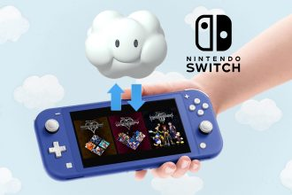
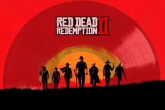

NINTENDO SWITCH Y SU JUEGO EN LA NUBE
Nintendo nos presentó al luchador que completará la plantilla de Sup er Smash Bros. Ultimate (Switch, 2018). Toda una sorpresa y una buena elección: Sora de la saga Kingdom Hearts. Un personaje querido entre los jugadores que nos trajo una noticia más: los videojuegos de esta serie llegarán pronto a Nintendo Switch. Algo previsible que se termi naran lanzando en la consola más vendida a lo largo del año en Japón pero no tanto la forma en la que lo harán. No veremos un lanzamiento físico ni digital sino en la nube. Una Cloud version no muy bien rec ibida por gran parte de la comunidad. leer mas